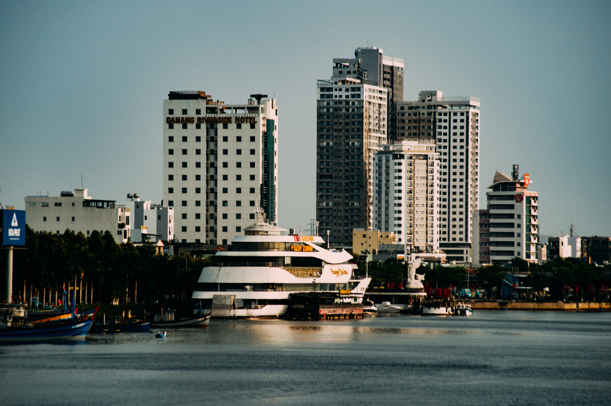

Giới thiệu
Đà Nẵng đã thay đổi chóng mặt với tốc độ phát triển kinh hoàng đó là lời nhận xét của đa số mọi người khi quay lại nơi đây. Thành phố Đà Nẵng thuộc miền Trung của Việt Nam nằm giữa đất nước nên rất thuận tiện cho mọi người cả miền Bắc hoặc miền Nam di chuyển đến. Với vị trí tuyệt vời và kết hợp tham quan được cả Hội An và Huế bởi thế hàng năm thu hút hàng triệu du khách trong nước cũng như quốc tế đến tham quan du lịch.
Bến du thuyền Đà Nẵng
Trong bài viết giới thiệu về Đà Nẵng này, mình sẽ chia sẻ toàn bộ về nơi đây giúp mọi người hiểu rõ hơn về thành phố được ví như Singapo thu nhỏ. Mọi người sẽ hiểu hơn vì sao mọi người vẫn thường gọi Đà Nẵng là thành phố ĐÁNG SỐNG nhất cả nước nhé.
Đà Nẵng có tổng diện tích hơn 1 ngàn km2 bao gồm 6 quận lớn đó là: Quận Hải Châu, Thanh Khê, Cẩm Lệ, Sơn Trà, Ngũ Hành Sơn và Liên Chiểu. Đây là 6 quận lớn nhất của thành phố Đà Nẵng và còn ở ngoại thành là 2 huyện Hòa Vang và huyện đảo Hoàng Sa. Hiện nay Đà Nẵng đã mở rộng thêm 2 quận Hòa Xuân và Hòa Quý vì thế đã nâng tổng diện tích tại Đà Nẵng tăng lên rất Nhiều.
+ Quận Hải Châu: Hiện nay thì quận Hải Châu vẫn là số 1 của Đà Nẵng và là nơi phát triển kinh tế nhất. Quận Hải Châu là trung tâm thành phố Đà Nẵng về buôn bán, kinh doanh phát triển và còn gọi là quận nhất.
+ Quận Sơn Trà và Ngũ Hành Sơn: Đây chính là 2 quận thu hút khách du lịch đến Đà Nẵng nhiều nhất vì có vị trí sát biển Mỹ Khê Đà Nẵng. Nơi có hơn 1 ngàn khách sạn lớn nhỏ và là trung tâm du lịch lớn nhất tại Đà Nẵng.
+ Quận Cẩm Lệ và Liên Chiểu: So với 3 quận trên thì 2 quận này phát triển thua kém nhiều chủ yếu là dân sinh và kinh doanh truyền thống tại Đà Nẵng.
+ Huyện Hòa Vang: Đây là ngoại thành cách xa trung tâm thành phố Đà Nẵng chủ yếu làm nông nghiệp.
Ở thế kỷ XVI, khi thương cảng Hội An là nơi buôn bán sầm uất số 1 Đông Nam Á thì Đà Nẵng cũng là nơi trung chuyển hàng hóa và cũng là nơi đóng tàu lớn nhất cả nước. Sau vài năm với sự phát triển mạnh mẽ lên thì Đà Nẵng là thay Hội An trở thành thương cảng số 1 để buôn bán với các nước trên thế giới.
Trong năm 1835 đến đời vua Minh Mạng thì ông lệnh tất cả các Tàu thương lái nước ngoài chỉ được neo đậu tại Cảng sông Hàn còn các cửa biển khác không được buôn bán. Chính từ đó Đà Nẵng đã chính thức trở thành thương cảng lớn nhất và đồng nghĩa phát triển nhất miền Trung.
Trước đây Quảng Nam và Đà Nẵng là một tỉnh và sau đó được tách ra thành 2 tỉnh riêng biệt. Khi tách ra thì Đà Nẵng đã phát triển vượt bậc thu hút nhà đầu tư rất lớn trong và ngoài nước trước khi chuyển mình là thành phố lớn nhất miền Trung trực thuộc Trung Ương ngày nay. Chính thực dân Pháp khi xâm lược chiến toàn bộ đất nước ta vào năm 1889 đã tách Đà Nẵng khỏi Quảng Nam và chính quyền Đông Dương trực tiếp cai trị.
Khi thực dân Pháp cai trị cũng đã đầu tư rất nhiều vào Đà Nẵng như cầu qua sông Hàn hiện nay vẫn còn giữ lại là “Cầu Nguyễn Văn Trỗi” bây giờ trở thành cầu đi bộ cho khách du lịch. Và sân bay hiện nay tại Đà Nẵng cũng là người Pháp xây dựng để phục vụ chiến tranh và vận chuyển khoáng sản. Pháp chính thức trao trả Đà Nẵng cho chính quyền vua Bảo Đại năm 1950. Sau đó đến năm 1965 khi Mỹ xâm lược đất nước cũng đã đổ bộ đến Đà Nẵng. Chiến tranh đã tàn phá Đà Nẵng đi rất nhiều cho đến năm 1975 khi đất nước hòa bình Đà Nẵng đã bắt tay phục hồi là hậu quả nặng nề của chiến tranh.
Đến năm 1996 với những thành tựu đáng nể về sự phát triển Đà Nẵng là chính thức được công nhận là thành phố trực thuộc Trung Ương đứng đầu miền trung Việt Nam.
Đèo Hải Vân
Hiền lành – Thật thà – Dễ gần là thương hiệu của con người Đà Nẵng. Cũng có người nhận xét thêm về con người ở Đà Nẵng là: An nhiên – Hiếu Khách và Nhiệt Tình vì sao mọi người đến đây lại có cảm nhận như thế thì mình sẽ giới thiệu đôi nét về con người Đà Nẵng nhé.
+ An nhiên: Con người Đà Nẵng có cuộc sống bình thản và chậm rãi. Mặc kệ ngoài kia cuộc sống có ồn ã, xô bồ chạy theo cơm áo gạo tiền thì ở Đà Nẵng con người nơi đây vẫn bình thản chăm chỉ và lặng lẽ. Mọi người làm những công việc mình yêu thích và nghỉ ngơi đúng giờ không quá tham việc và không làm bất chấp để kiếm nhiều tiền. Khác với nhiều nơi, bạn đến Đà Nẵng ăn uống và mua sắm hiếm khi gặp phải tình trạng chặt chém đâu nhé. Bản sắc văn hóa của con người Đà Nẵng vẫn còn lưu lại nguyên vẹn đến tận bây giờ và khi mọi người đến Du lịch Đà Nẵng phải thốt lên “Tại Sao” cuộc sống nơi đây lại yên bình đến thế.
+ Hiếu khách: Với bản tính hiền lành thật thà đã là bản sắc cũng như thương hiệu đặc trưng của người dân Đà Nẵng. Khách du lịch đến Đà Nẵng luôn được đón tiếp nhiệt tình và không có sự phân biệt là “Khách vãng lai” như các thành phố phát triển du lịch khách trên cả nước. Không chỉ những khách sạn lớn 4-5 sao sang trọng mà ngay cả những khách sạn nhỏ hơn cũng thể hiện sự chuyên nghiệp hiếu khách. Những người phục vụ luôn quan trọng là nụ cười thân thiện, những cử chỉ vâng dạ, cách xưng hô cô chú và xưng con … cũng làm mềm lòng tất cả mọi người khi đến nơi đây. Chính vì thế nên đến Đà Nẵng khiến ta cảm thấy có sự gần gũi và thân thiết đến lạ và không thể quên.
+ Nhiệt tình: Nếu như chúng ta đến đây và cảm nhận được con người Đà Nẵng nhiệt tình đến quên cả lợi ích của bản thân và có khi ra bên ngoài còn dễ bị thiệt thòi ấy. Đến Đà Nẵng bạn không cần Google Maps đâu nhé vì chẳng bao giờ sợ bị “Lạc Đường” đâu nhé. Người dân Đà Nẵng họ nhiệt tình tới mức khi Bạn hỏi đường mà chỉ mãi bạn không hiểu thì họ sẽ dẫn bạn tới tận nơi mà không nhận bất cứ thù lao nào bạn trả nhé.
Và hiện nay Du lịch Đà Nẵng đã rất phát triển thì người dân nơi đây đã quá quen với việc đón tiếp hàng triệu du khách đến mỗi năm. Và ủng hộ những sự kiện lớn tầm cỡ thế giới như Lễ hội Pháo hoa quốc tế tại Đà Nẵng và những sự kiện nổi bật khác nữa trong năm. Đây chính là văn hóa con người Đà Nẵng, một tình yêu với một cảm xúc được xác định rõ ràng mang tên Đà Nẵng.
Người Đà Nẵng
Nếu như tình trạng kẹt xe đến khổ sở khi bạn đang ở Sài Gòn hoặc Hà Nội thì đến Đà Nẵng giao thông cực kỳ thông thoáng. Mọi người tham gia giao thông rất đúng luật và thực hiện luật giao thông rất nghiêm túc. Hiếm khi bạn thấy có 1 người nào đó ra đường không đội mũ bảo hiểm, phóng nhanh vượt ẩu và vượt đèn đỏ.
Đường phố Đà Nẵng cũng nằm trong tốp 1 cả nước về tín hiệu giao thông. Bạn đi đến ngã 3 ngã 4 nào cũng gặp đèn đỏ và phải thốt lên rằng tại sao lại nhiều đèn xanh đèn đỏ đến vậy. Nhưng mọi người vẫn chấp hành luật đáng nể không ai hối hả mà vượt đèn đỏ gây nguy hiểm cho người khác hết.
Đường phố Đà Nẵng các nút giao thông, các ngã 3 ngã 4 đều có gắn Camera phạt nguội khi mọi người vi phạm giao thông sẽ có giấy gửi về tận nhà nhé. Chính vì thế nhanh 1 chút các bạn sẽ bị phạt tiền nếu vi phạm đấy. Đừng dại dột khi di chuyển ở Đà Nẵng mà không chấp hành luật giao thông.
+ Về thời tiết ở Đà Nẵng thì cực kỳ mát mẻ vì được bao quanh là Biển. Đà Nẵng nằm trong vùng khí hậu nhiệt đới gió mùa hàng năm với nhiệt độ cao và ít biến động.
+ Về khí hậu ở Đà Nẵng có 2 mùa phân biệt rõ rệt là : Mùa Nắng và Mùa Mưa, vì nằm giữa cả nước nên chịu ảnh hưởng rõ rệt của các tỉnh miền Bắc và Miền Nam.
Mùa Nắng: Kéo dài từ tháng 4 hết tháng 9, thời điểm này trời ít mưa và nhiệt độ tăng cao phù hợp với du lịch biển và tham quan.
Mùa Mưa: Thường từ tháng 10 đến tháng 2, thời điểm này thời tiết hay mưa và có khi mưa cả tuần không ngớt. Nhưng không vì thế mà không hút khách du lịch đâu nhé, Đà Nẵng là thành phố du lịch quanh năm.
Thời tiết và khí hậu ở Đà Nẵng không quá khắc nghiệt. Mùa nắng thì không quá nóng bức và mùa mưa thì không quá lạnh. Và có thể gọi Đà Nẵng chính là thiên đường du lịch của Việt Nam.